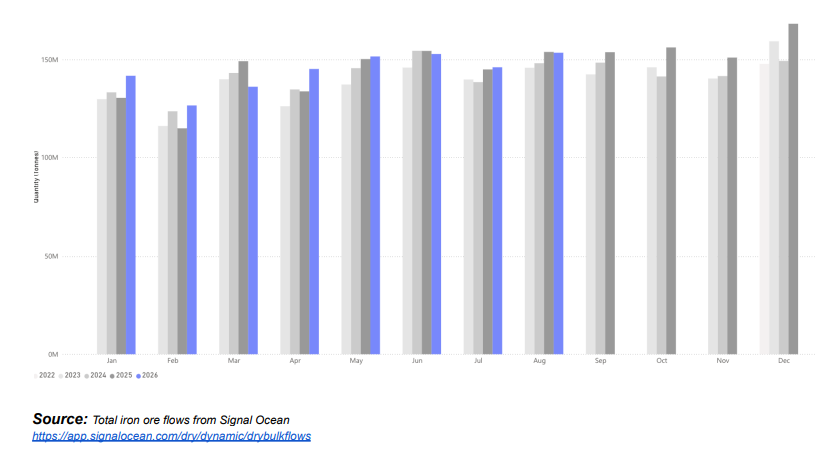
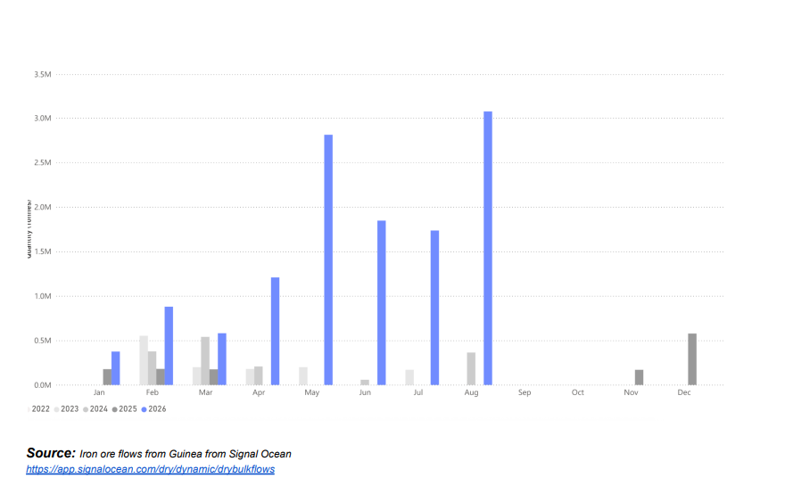
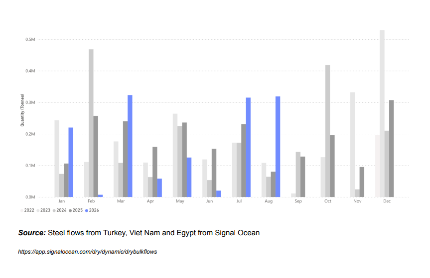

Iron ore market fundamentals continued to soften as subdued Chinese steel demand kept pressure on inventories and reduced the need for additional seaborne supply. While Simandou is emerging as an increasingly important source of high-grade iron ore, stronger Guinea exports are unlikely to fully offset weaker Brazilian flows. At the same time, the EU’s new steel import regime could constrain indirect steel exports through key processing hubs.
● Global iron ore flows remained flat y/y in August 2026.
● Flows to China grew slightly by 0.2% in August 2026.
● Flows destined to ports outside of China fell by 2% y/y.
● Iron ore flows from Guinea were 2.9 Mt, a record high.
● Iron ore flows from Australia increased by 5% y/y, but flows from Brazil have fallen by over 11%.

Global seaborne bulk iron ore flows reached 153.5 Mt in August 2026, flat on the same period a year earlier but up 5% m/m. Seaborne iron ore arrivals in China in August fell 7.7%, despite flows leaving for China increasing slightly by 0.2%. Iron ore flows from Guinea reached a record high of 3.1 Mt in August, at a time when loadings in Guinea typically soften by up to 20% due to heavy rainfall. This is in stark contrast to Brazil, which experienced an 11% decline in iron ore exports, driven by softer demand from European steelmakers. The largest iron ore producer, Australia, saw exports increase by 5%, driven by robust loading volumes and steady Asian demand.

The outlook for Q4 2026 may be less positive. The EU’s new steel import regime introduces a “melt and pour” requirement, improving traceability to the steel’s original production country and limiting the scope for quota circumvention through third-country processing or transhipment. This could reduce the appetite of steel processors in key intermediary markets such as Türkiye, Egypt and Vietnam, weakening demand for semi-finished and finished steel from China and, in turn, reducing Chinese steel export flows. Combined with already high iron ore port stocks in China, expectations of weaker steel demand point to softer iron ore flows in 2026 Q4. While iron ore shipments from Simandou in Guinea are likely to remain strong, and potentially increase further, the resulting pullback is likely to come primarily from Brazil, where exports are already showing signs of weakness.

Guinea to China the likely positive in 2026 Q4
Overall, the maritime market enters Q4 2026 facing a more challenging demand environment. While seaborne trade has remained relatively resilient, signs of softer steel demand and elevated iron ore inventories in China point to weaker requirements for raw materials, with the impact likely to be felt most clearly in long-haul capesize iron ore voyages. Stronger shipments from Guinea’s Simandou project should provide additional supply, but are unlikely to fully offset softer Brazilian exports, potentially reducing tonne-mile demand. At the same time, the EU’s new steel import regime could weaken China’s indirect steel export channels through intermediary markets such as Turkey, Egypt and Vietnam, further reducing pressure on the upstream supply chain. For dry bulk shipping, this combination points to softer iron ore volumes and shorter average voyage distances, creating a less supportive backdrop for Capesize demand into year-end.
Data Source:Signal Ocean Platform